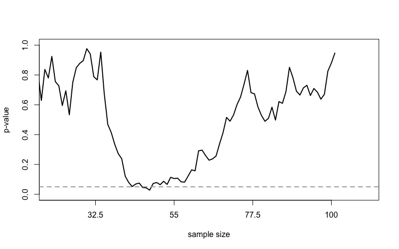
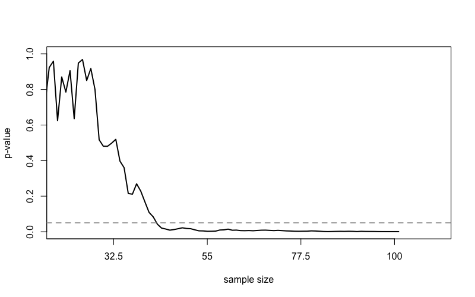
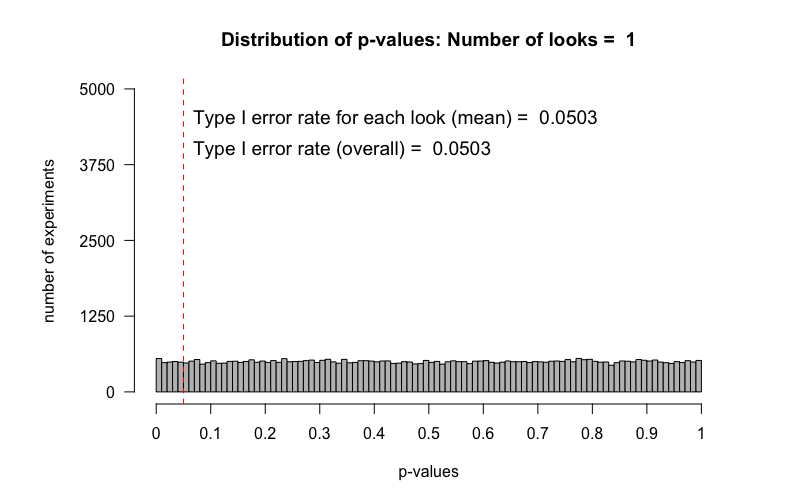
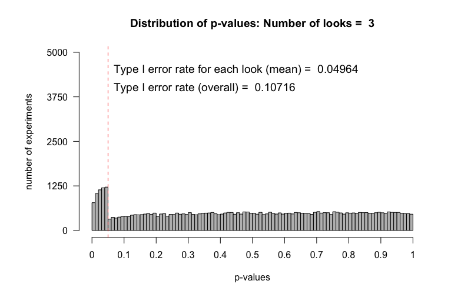
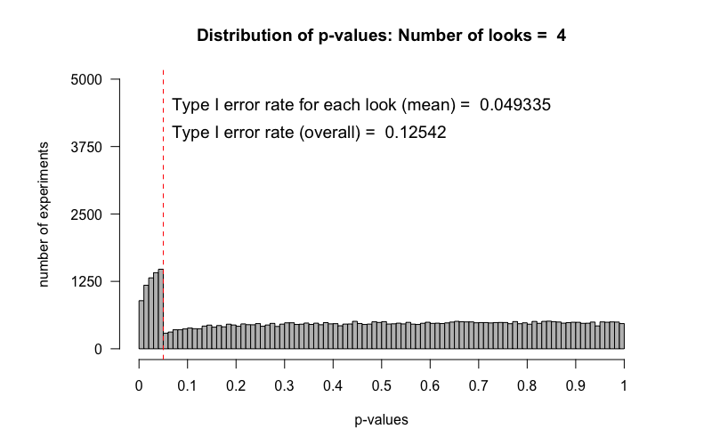
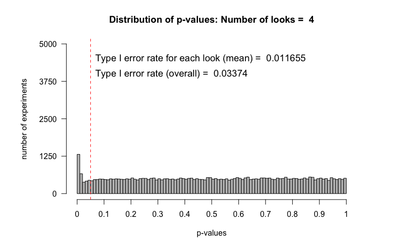

Week 5 lecture notes - PSYC 5301
Review of Questions 2 and 3 from Week 4 discussion
Question 2: Suppose you are testing a hypothesis H1. Prior literature indicates that, a priori this hypothesis is 3 times more likely than the null H0. Suppose further that you have 80% power and set \(\alpha=0.05\). What is the probability of making a Type I error?
- 4 said 5%
- 2 said 1.25%
- 1 said 0.0125
- 1 said 0.15%
- 2 were not sure how to set up problem
Question 3: "optional stopping" problem.
a. does stopping at 55 affect probability of Type I error?
- 3 said "Yes - increase"
- 1 said "yes - decrease"
- 5 said "No"
- 1 gave no clear answer
b. would results change if you went ahead and ran all 100 participants?
- 2 said "maybe"
- 2 said "Yes"
- 4 said "No"
- 2 gave no clear answer
c. good research practice?
- 8 said "No"
- 1 said "Yes"
- 1 said "shady"
Answers:
Question 2: using technique from Week 3, we can solve this problem the following way. Assume 10,000 replications. Since H1 is 3 times more likely than H0, this implies that H0 will be true on 2500 trials and H0 will be false on 7500 trials. This partition, along with \(\alpha=0.05\) and power=80%, gives the following table:
| decision | HO true | H0 false |
|---|---|---|
| reject H0 | 125 trials | 6000 trials |
| accept H0 | 2375 trials | 1500 trials |
Thus, the probability of making a Type I error is 125/10000 = 0.0125 = 1.25%
Question 3: this one is hard to solve mathematically, so instead we'll do some simulations.
Let's tackle the second part first. If you get a sig result in the middle, will you get the same result at the end if you run all your participants?
In our R simulation, we will simulate the p-values obtained as datapoints increase up to 100. Further, we will simulate two conditions:
Condition 1: assume a null effect. As you can see, getting a sig result halfway through the experiment does NOT mean that you'll get a sig result at the end.

Condition 2: assume a true effect. In this case, the trajectory is clearly different.

The problem is that you never know which of these trajectories is the condition considered in your experiment. Thus, stopping in the middle may yield different results than stopping at the end.
Now we can tackle part 1. To answer this, we will simulate 50,000 replications of an experiment where there is no effect (HO is true). Further, we will suppose that we look at the data in the middle and stop if we see a significant result (optional stopping). Set \(\alpha=0.05\) for each look.
Looks = 1 
Looks = 2
Looks = 3 
Looks = 4 
Clearly, optional stopping has a profound effect on the overall type I error rate!
How to do optional stopping the right way!
Fortunately, there is a way to do optional stopping while still controlling the Type I error rate. We will describe two methods:
Method 1: Bonferroni correction - divide \(\alpha\) by the number of planned looks. For example, if planning 4 looks, set \(\alpha=0.05/4=0.0125\) for each look. As you can see, this results in an overall Type I error rate LESS than 5%. This method is "too conservative" and increases Type II error rate. 
Method 2: Pocock correction - use the "Pocock boundary" for each test.
| Number of looks | Pocock boundary |
|---|---|
| 2 | 0.0294 |
| 3 | 0.0221 |
| 4 | 0.0182 |
| 5 | 0.0158 |
As you can see, the overall Type I error rate is held nicely at 5%
Comparing two independent groups
Review
The first part of this lecture should be old material from your previous statistics course. Then, we will talk about some new stuff.
Suppose we have two groups and want to test the hypothesis \(H_0: \mu_1=\mu_2\). Further, assume the following:
- sampling is random
- observations in group 1 are independent from observations in group 2
- both groups are sampled from normal distributions
- both groups have equal variances (homoscedasticity)
Then we may reject \(H_0\) if \(|t|\geq t_{\text{crit}}\), where \[ t=\frac{\overline{X}_1-\overline{X}_2}{\sqrt{s_p^2\bigl(\frac{1}{n_1}+\frac{1}{n_2}\bigr)}}, \] \(t_{\text{crit}}\) is the critical value of the \(t\)-distribution with \(df=n_1+n+2-2\) degrees of freedom, and \(s_p^2\) is the common pooled variance, computed by \[ s_p^2= \frac{(n_1-1)\cdot s_1^2+(n_2-1)\cdot s_2^2}{n_1+n_2-2}. \]
In practice, this is easily computed by computer software (as we'll demonstrate later).
However, what do we do when one (or more) of the assumptions above is violated?
Note: the first two are determined by your experimental design. The last two are statistical, so we can test them!
- Testing for normality
- The Shapiro-Wilk (1965) test can be used to test for normality.
- \(H_0\) = population is normally distributed
- output: two statistics
- \(W\): indexes the extent to which a distribution deviates from normality.
- \(p\): the usual \(p\)-value - tells you whether to reject the null
- so, you DON'T want to reject this one!
- Testing for equal variances
- Levene's (1960) test can be used to test for equality of variances
- \(H_0\) = population variances are equal
- output: two statistics
- \(F\): indexes extent to which population variances differ
- \(p\): usual \(p\)-value
- you DON'T want to reject this one either!
So what if you reject one or both of these tests? Solution: use Welch's \(t\)-test.
- Welch's (1947) test has two differences from "usual" t-test:
- same formula as \(t\)-test above, but instead of using pooled variance, you use the separate variances \(s_1^2\) and \(s_2^2\).
- slight adjustment to degrees of freedom:
\[ df = \frac{\Bigl(\frac{s_1^2}{N_1}+\frac{s_2^2}{N_2}\Bigr)^2}{\frac{s_1^4}{N_1^2\cdot df_1}+\frac{s_2^4}{N_2^2\cdot df_2}} \]
With these tools, we are ready to dive into our data!
How to structure data
The first consideration when using any software is to know how to structure your data. With JASP (as well as SPSS), the data is always organized according to the following principles:
- each row of the data file should correspond to ONE subject
- each column should represent a variable (either IVs or DVs)
The main difference between JASP and SPSS (other than the fact that JASP is free) is that you cannot directly input data (or edit it) within JASP. You have to work with the data in a spreadsheet program (Excel or OpenOffice) and export the data as a CSV file.
Performing analysis in JASP
- Click on "File" tab, select "Open", then "Computer", then "Browse". From here, you will navigate to where you've saved your CSV file. Click "Open" once you've found the file.
- Make sure all of the variable types are correct. For example, in our example data, I need to change the "recalled" data column to a continuous scale. This is done by clicking on the symbol beside the variable name and selecting the appropriate icon (a ruler for continuous scale, a venn diagram for nominal data, a bar graph for ordinal data, etc.)
- Click the "T-Tests" button and select "Independent Samples T-Test". For additional statistics, select "Descriptives", "Descriptives plots", and "Effect size". Choose "recalled" as a dependent variable and "condition" as a grouping variable.
- Example paragraph: "The shallow processing group recalled an average of 6.87 words (SD = 2.34), whereas the deep processing group recalled an average of 9.45 words (SD = 2.99). To determine whether these group means differed significantly, we performed an independent samples t-test. The two group means differed significantly, t(172) = 6.32, p<0.001, d=0.96."
- Choose both assumption checks to perform the Wilk-Shapiro test and the Levene test. If one or both results indicate violation of any assumptions, choose the "Welch" test and report the results.
- Example: "To test whether we satisifed the assumptions of the t-test, we further tested both samples for normality and equality of variances. To test for normality, we used the Shapiro-Wilk test. The shallow processing group deviated significantly from normality, W=0.96, p=0.009, whereas the deep processing group did not deviate significantly from normality, W=0.98, p=0.275. Further, we tested for equality of variances using Levene's test, which indicated that the two samples exhibited marginally different variances, F(1)=4.12, p=0.044. Given these violations of the assumptions for the Student t-test, we interpret the results cautiously. However, when performing the Welch t-test (which relaxes the assumption of equal variances), we get the same overall result: the deep processing group recalled signficantly more words than the shallow processing group, t(162.8)=6.32, p<0.001."
Assignment
Assignment for next meeting (Feb 28)
- download the raw data from the course website and compile it into a single CSV file.
- using the techniques we described today, analyze the data to test the LOP hypothesis.
- finish your manuscript, adding the Results and Discussion sections. In addition to the requirements from last lecture (see Week 3), make sure you include the following:
- Results: you must report the Student t-test, the assumption checks, and (if needed) the Welch t-test.
- Discussion:
- start by restating the purpose of the experiment, followed by a paragraph describing what you found
- if your data violates assumptions, explain this. What does this say about your conclusions?
- you may have noticed that the word lists contained both abstract words as well as concrete words, though we did not manipulate this. Do you think there would be a difference between these word types? How might you design a followup experiment testing this as an additional variable?